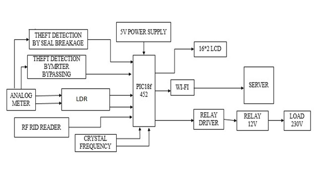
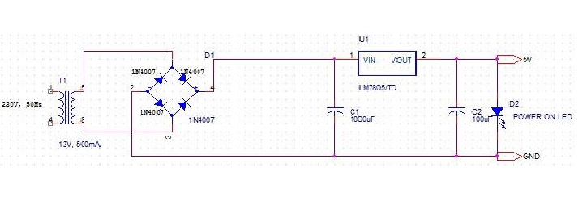
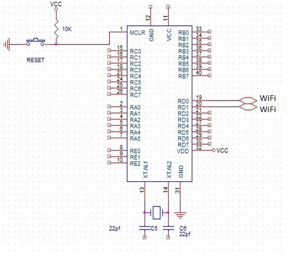
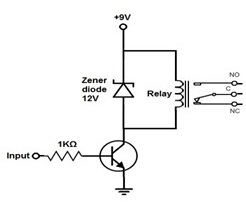
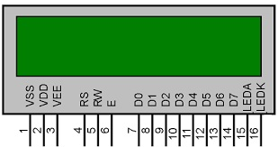
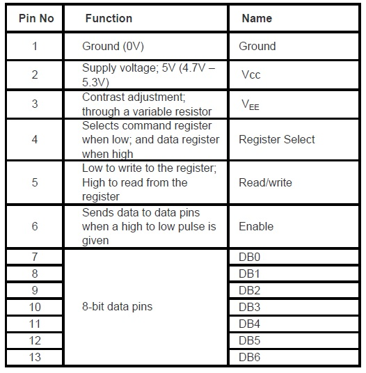
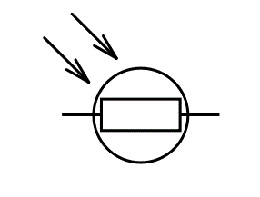

3. Problem Statement
3.1 Problems In Existing System
The present system only provides feedback to the customer at the end of the month that how much power is consumed in the form of bill. The consumer has no way to track their energy usage on a more immediate basis.
The consumers are growing exponentially fast and load on power providing divisions is rapidly rising. In the existing system meter tampering can be done easily and it’s one of the major drawback for an energy crisis.
3.2 Proposed System
In the proposed system, consumer can do power management by knowing energy usage time to time. The Customer needs to pay the bill on schedule, if couldn’t, the electric power connectivity can be turned off autonomously from the distant host.
The system is more reliable and accurate reading values are collected from energy meters.
Live readings of the energy meter can be viewed online.
The human intensive work is avoided and all the values are maintained in the central server.
The communication medium is secure and tampering of energy meters can be identified easily. If an error occurs in the system, the value in the central server will not be updated. Once the value updated crosses the threshold time, the server can determine that something is wrong in the system and can report the engineers in EB. Thus, identification of error becomes easier. Since the values are stored in the central database, the reports are made accessible from anywhere in the world. Also, the server is online 24x 7.
4. Methodology
4.1 Block Diagram

4.2 Power Supply Design
This is very basic block in every electrical and electronics projects circuit, which is used for providing the required power to the microcontroller and other components in the circuit.
Generally, this power supply block consists of step-down transformer, bridge rectifier, and IC 7805 voltage regulator. Thus, the required 5V DC power supply is given to the microcontroller.

To get 5V regulated output we use LM7805.Output voltage of LM7805 regulator is 5V. Dropout Voltage of LM7805 is 2V,So minimum input voltage required at input of regulator to get 5V output is :-
Output of LM7805 + Dropout voltage = 5+2 = 7V.
So minimum input voltage is 7V and maximum input voltage is 35V (Ref. Datasheet) for which LM7805 gives 5V regulated output.
Vdc = Regulator output + drop across diode and
IC = 5+4 = 9V
As we increase Vin for LM7805 power dissipation also increases. For LM7805 maximum power dissipation is 15W(Ref. Datasheet). In our design, Power Dissipation is:-
Vdc * Io = 9 *.3 = 2.7W
2.7W < 15W, so it does not need heat sink.
Filter Design
We have,
C = wcRL/(2 * pi * f * RL)
where RL=Vdc/I = 9 / 0.3 = 30 ohm
Assume wcRL = 10; i.e. 10% voltage variation is allowed.
C = 10/(2 * 3.14 * 50 * 30) = 1061uF
Select standard capacitor = 1000 uF/25V
25V is selected as voltage across C should be greater than Vin.
Bulk Decoupling capacitor:-
We connected 100 uF at output of regulator as a decoupling capacitor. It is optional.
When devices connected to the 5V supply heavy current from power supply, output of regulator may fall down and become unstable.
In such cases 100uF provides power to the devices by discharging itself to maintain 5V output constant. Value of decoupling capacitor may be > 10 uF.
Rectifier Design:-
Diode Selection
I(f) average = Io/2 = 300mA/2 = 150mA
Now, Im = 300mA
PIV rating = Vm= pi * Vc(DC)/2 = 3.14 * 9/2 = 15V
So diode with PIV rating greater then 15V is suitable. IN4007 is more than sufficient as it has PIV = 1000V
Transformer Design:-
RMS secondary output voltage of transformer is:-
Vs=(Vm+ n * 1)/1.42
n=1 for FWR or HWR
n=2 for BWR
But Vm = Vdc * pi / 2 = 14.13 = 15(approx).
So,
Vs=(15+2)/1.42
Vs = 12V
RMS current on secondary side is:-
Irms = 2 * Im/ pi = 0.191A
Irms = 0.191A
Rating of transformer = Vs * Irms = 12 * 0.191 = 3.25 VA.
V1 / V2 = I2 / I1 230 / 12 = 0.191 / I1
I1 = 0.01A
Turn Ratio is I2 / I1 = N1 / N2
OR N1 / N2 = 0.191 / 0.01 = 19
So, Turn ratio is 19:1
Size of Core is given by,
=Sqrt(wp/0.87) = Sqrt(230 * 0.01 / 0.87) = 1.625 sqcm.
Size of Core = 1.625sqcm.
Power On Indication:-
We know voltage drop across LED when it is in ON state is 1.8 to 2.5v
We should put a series resistor to control If value of resistor should be selected such that forward current shall not exceed If(max) = 50mA (Ref. Datasheet).
If = (5V-2.5) / 470
If = 5.31mA
For greater brightness value of resistor should be increased.
3.3V Design : Use LM317 regulator.
Assume R1 = 240 ohm
Calculate R2
Uses formula Vo = 1.25 * (1+R2 / R1) + Iadj * R2
Neglect Iadj.
3.3 = 1.25 * (1 + R2 / 240)
R2 = 390R 12V
Design : Use LM7812 and follow the same procedure.
Note : Transformer and Capacitor ratings mentioned in circuit are suitable for 5V and
3.3V design for 12V the ratings should be recalculated.
4.3 Microcontroller

The microcontroller block can be considered as the main block of the entire circuit, as it is programmed to control all the components to perform the desired operation.
Here, in this project PIC18f452 microcontroller is used. The energy meter is interfaced with the microcontroller using an interfacing device or middle wire device namely Opto-isolator. Similarly, Wi-Fi modem is interfaced with PIC18f452 microcontroller using an interfacing device.
Function Of Microcontroller:-
- 100,000 erase/write cycle Enhanced Flash program memory typical.
- 1,000,000 erase/write cycle Data EEPROM memory typical.
- Flash/Data EEPROM Retention: > 40 years.
- 8 x 8 Single Cycle Hardware Multiplier.
- Wide operating voltage range: 2.0V to 5.5V
- High current sink/source 25 mA/25 mA.
- One Capture/Compare/PWM (CCP) module.
- Enhanced Capture/Compare/PWM (ECCP) module (40/44-pin devices only):-
- One, two or four PWM outputs.
- Selectable polarity.
- Programmable dead time.
- Auto-Shutdown and Auto-Restart.
- Enhanced Addressable USART module:-
- Supports RS-485, RS-232 and LIN 1.3
- RS-232 operation using internal oscillator block (no external crystal required).
- Auto-Wake-up on Start bit.
- Auto-Baud detect.
- 10-bit, up to 11-channel Analog-to-Digital Converter module (A/D), up to 100 Kbps.
- Two dedicated receive buffers
- Advanced error management features.
Want to know more about PIC18f452 microcontroller. Below I have mentioned some Useful links. Please check that link.
4.4 RELAY & RELAY DRIVER

Relays are interfaced with microcontroller using relay driver. The loads are connected between the relays and energy meter, such that loads are given a 230V AC power supply for their operation. This 230V AC power supply is given to operate the loads until the relays are switched by the user. The microcontroller is programmed to give control commands to the relay driver such that to switch on or off the relays.
Want to know more about Relay and Relay-driver. Below I have mentioned some Useful links. Please check that link.
4.5 16*2 LCD DISPLAY
LCD (Liquid Crystal Display) screen is an electronic display module and find a wide range of applications. A 16x2 LCD display is very basic module and is very commonly used in various devices and circuits.
These modules are preferred over seven segments and other multi segment LEDs.
The reasons being: LCDs are economical; easily programmable; have no limitation of displaying special & even custom characters (unlike in seven segments), animations and so on.
A 16x2 LCD means it can display 16 characters per line and there are 2 such lines. In this LCD each character is displayed in 5x7 pixel matrix.
This LCD has two registers, namely, Command and Data. The command register stores the command instructions given to the LCD.
A command is an instruction given to LCD to do a predefined task like initializing it, clearing its screen, setting the cursor position, controlling display etc.
The data register stores the data to be displayed on the LCD.
The data is the ASCII value of the character to be displayed on the LCD.
It requires 3 control lines as well as either 4 or 8 I/O lines for the data bus.
Here we are using 8-bit mode of LCD, i.e., using 8 bit data bus.

The three control lines are referred to as EN,RS and RW.
These three pins are numbered 4, 5 and 6 as shown above.
RS is used to make the selection between data and command register. For RS=0, command register is selected and for RS=1 data register is selected.
R/W gives you the choice between writing and reading. If R/W=1 reading is enabled. If R/W=0 writing is enabled.
Enable pins is used by the LCD to latch information presented to its data pins. When data is supplied to data pins, a high to low pulse must be applied to this pin in-order for the LCD to latch in the data present at the data pins. It maybe noted here that the pulse must be of minimum 450ns wide.
Pin 1 (VSS) is a ground pin and it is certainly needed that this pin should be grounded for LCD to work properly.
VEE and VDD are given +5V normally. However VEE may have a potentiometer voltage divider network to get the contrast adjusted. But VDD is always at +5V .
The 8-bit data pins, D0-D7, are used to send information to the LCD or read the contents of LCD's internal register.
To display letters and numbers, we send ASCII code for the letters A-Z, a-z and numbers 0-9 while making RS=1.
We also use RS=0 to check the busy flag bit to see if the LCD is ready to receive information. The busy flag is D-7 and can be read when R/W=1 and RS=0, as follows:- if R/W=1, RS=0. When D7=1 (busy flag=1), the LCD is busy taking care of internal operations and will not accept any new information.
When D7=0, the LCD is ready to receive new information.
It is recommended to check the busy flag before writing any data to LCD.

Want to know more about 16 * 2 LCD. Below I have mentioned some Useful links. Please check that link.
4.6 LDR Sensor
An LDR is a component that has a (variable) resistance that changes with the light intensity that falls upon it. This allows them to be used in light sensing circuits.
They are made up of semiconductor materials having high resistance.
There are many different symbols used to indicate a LDR, one of the most commonly used symbol is shown in the figure below. The arrow indicates light falling on it.

Working:-
A light dependent resistor works on the principle of photo conductivity. Photo conductivity is an optical phenomenon in which the materials conductivity is increased when light is absorbed by the material.
When light falls i.e. when the photons fall on the device, the electrons in the valence band of the semiconductor material are excited to the conduction band.
These photons in the incident light should have energy greater than the band gap of the semiconductor material to make the electrons jump from the valence band to the conduction band.
Hence when light having enough energy strikes on the device, more and more electrons are excited to the conduction band which results in large number of charge carriers.
The result of this process is more and more current starts flowing throgh the device when the circuit is closed and hence it is said that the resistance of the device has been decreased.
This is the most common working principle of LDR.
Want to know more about LDR sensor. Below I have mentioned some Useful links. Please check that link.
4.7 RF ID READER
A scheme of Electricity billing system called "PREPAID ENERGY METER WITH TARIFF INDICATOR" can facilitate in improved cash flow management in energy utilities and can reduces problem associated with billing consumer living in isolated area and reduces deployment of manpower for taking meter readings.
Every consumer can recharge RFID tag assigned and recharge its meter at various ranges (i.e. Rs.50, Rs.100, Rs.200 etc.).
In our project we have given the name for RFID tag card smart card.
Consumer can check its balance in LCD attached with the module and be prepare for the next recharge in advance.
When a recharge coupon or we can say RFID tag come in front of RFID reader, the reader read the information from its unique RFID Tag and record into database.
Basically it has three component antenna, transceiver and transponder.
So these are components that perform the whole task.
When a RFID recharge tag brings near the RFID transceiver it read the code and send it to the microcontroller, microcontroller checks the code if it is ok then recharge the energy meter if not it display a message of invalid code.
Want to know more about RF-ID reader. Below I have mentioned some Useful links. Please check that link.
4.8 Wi-Fi Modem
Wi-Fi is a technology that uses radio waves to provide network connectivity.
A Wi-Fi connection is established using a wireless adapter to create hotspots - areas in the vicinity of a wireless router that are connected to the network and allow users to access internet services.
Once configured, Wi-Fi provides wireless connectivity to your devices by emitting frequencies between 2.4GHz - 5GHz, based on the amount of data on the network.